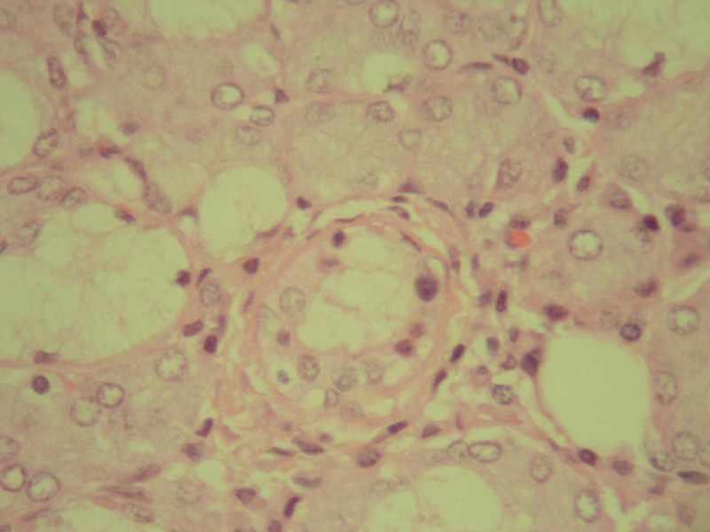
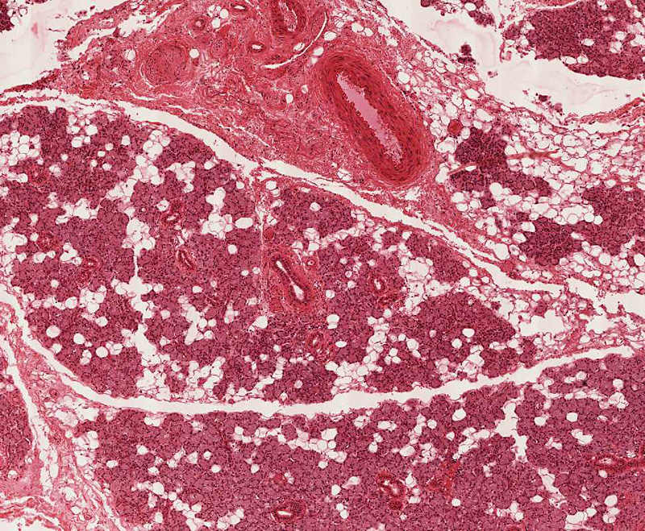

Sublingual Glands
Did you know that...
The sublingual glands are salivary glands in the mouth. They lie anterior to the submandibular gland under the tongue, beneath the mucous membrane of the floor of the mouth. They are drained by 8-20 excretory ducts called the ducts of Rivinus. The largest of all, the sublingual duct (of Bartholin) joins the submandibular duct to drain through the sublingual caruncle. The sublingual gland consists mostly of Mucous acini capped with serous demilunes and is therefore categorized as a mucous gland. Most of the remaining small sublingual ducts open separately into the mouth on an elevated crest of mucous membrane, the plica fimbriata, formed by the gland and located on either side of the frenulum linguae. The chorda tympani nerve (from the facial nerve via the submandibular ganglion) is secretomotor to the sublingual glands. 

Additional Information
Read More...
The lubrication and binding functions of the sublingual glands cannot be underestimated. Secretions from the glands mix with food as it is chewed, making the material slippery and easily swallowed. Because of the saliva content of the masticated food, it can move without difficulty into the throat and on to the digestive tract. Low levels of saliva production can make the process of swallowing much more difficult and will increase the potential for food to lodge in the throat.